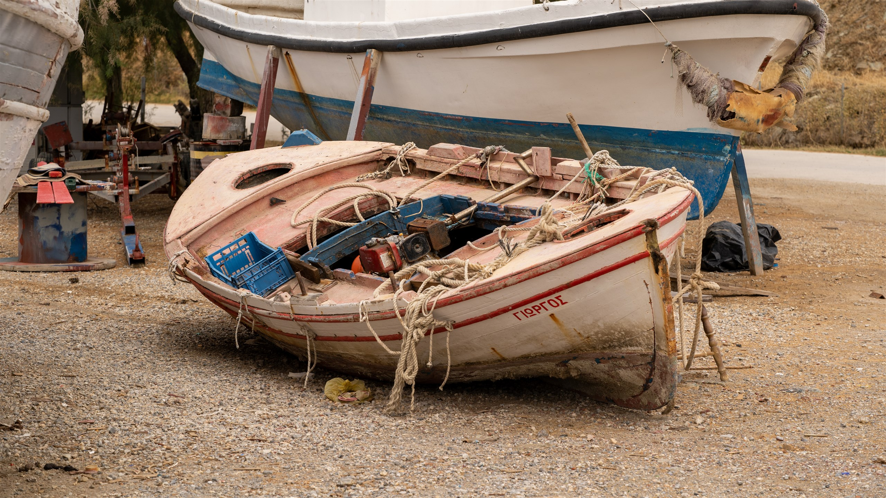

Passionate Anglers
Welcome to the official site of the My Lure Collection Android application.
The ultimate all-in-one fishing companion.
Whether you're a seasoned angler or new to the fishing, this app helps you log and track every aspect of your fishing journey, keeping your experience organized, insightful, and fun.